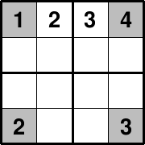

Sudoku Gen 
What Is Sudoku Gen?
The sudokugen plugin is a sudoku generator can can generate puzzles of these sizes:
- 2 by 2 (good for kids)
- 3 by 3 (traditional)
- 4 by 4 (good for sudoku masters)

Additionally, you can inject preset values for cells to simplify the generation of overlapping puzzles.
Where Can I Get It?
You can get the paid sudokugen plugin on the Corona SDK Marketplace.
Basic Usage
Updating build.settings
sudokugen is a plugin and thus requires that you add it to the plugins section of build.settings as follows:
settings =
{
plugins =
{
["plugin.sudokugen"] = { publisherId = "com.roaminggamer" },
},
}
Requiring It
To include sudokugen in your project, simply add this line in main.lua:
local sudokugen = require "plugin.sudokugen"
2 by 2 Puzzles
sudokugen.gen_sudoku2( seed, [ cells ] )
Generates a 2 by 2 puzzle.
- seed - Required value used to seed random generator for this generation.
- cells - An optional table of predefined cell values. Leave values at 0 to let the generator fill them. (Up to 16 values)
Warning: You must take care predefining in the cells. If you provide an illegal combination, the generator may hang trying to produce a legal puzzle.
2 by 2 Example
local sudokugen = require "plugin.sudokugen"
-- Returns a 2 by 2 puzzle (16 cells)
local cells = sudokugen.gen_sudoku2( math.random(1, 100000) )
-- Print the puzzle to the console
local out = ""
for i = 1, #cells do
out = out .. cells[i]
if( i%4 == 0) then
print( out )
out = ""
end
end
-- Prints something like this:
-- 4123
-- 2314
-- 3241
-- 1432
3 by 3 Puzzles
sudokugen.gen_sudoku3( seed, [ cells ] )
Generates a 3 by 3 puzzle.
- seed - Required value used to seed random generator for this generation.
- cells - An optional table of predefined cell values. Leave values at 0 to let the generator fill them. (Up to 81 values).
Warning: You must take care predefining in the cells. If you provide an illegal combination, the generator may hang trying to produce a legal puzzle.
3 by 3 Example
local sudokugen = require "plugin.sudokugen"
-- Returns a 3 by 3 puzzle (81 cells)
local cells = sudokugen.gen_sudoku3( math.random(1, 100000) )
-- Print the puzzle to the console
local out = ""
for i = 1, #cells do
out = out .. cells[i]
if( i%9 == 0) then
print( out )
out = ""
end
end
4 by 4 Puzzles
sudokugen.gen_sudoku4( seed, [ cells ] )
Generates a 4 by 4 puzzle.
- seed - Required value used to seed random generator for this generation.
- cells - An optional table of predefined cell values. Leave values at 0 to let the generator fill them. (Up to 256 values).
Warning: You must take care predefining in the cells. If you provide an illegal combination, the generator may hang trying to produce a legal puzzle.
4 by 4 Example
local sudokugen = require "plugin.sudokugen"
-- Returns a 4 by 4 puzzle (256 cells)
local cells = sudokugen.gen_sudoku4( math.random(1, 100000) )
-- Print the puzzle to the console
local out = ""
for i = 1, #cells do
out = out .. cells[i]
if( i%16 == 0) then
print( out )
out = ""
end
end
Overlapping 2 by 2
In this example we will generate two puzzles, where the second puzzle's upper-left box will contain the same values as the first puzzle's lower-right box.
Note: A box is a collection of cells. For a 2 by 2 puzzle, a box has four cells.
-- Generate the first puzzle
local sample1 = sudokugen.gen_sudoku2( math.random(1,10000) )
-- Generate a blank cells
local cells = {}
for i = 1, 16 do
cells[i] = 0
end
-- Snag the lower-right box values and inject them into the cells at the right places
cells[1] = sample1[11]
cells[2] = sample1[12]
cells[5] = sample1[15]
cells[6] = sample1[16]
-- Generate our second puzzle and pass in the predefined list of cells (mostly 0).
-- The generator will retain any non-zero values and generate those that are 0.
local sample2 = sudokugen.gen_sudoku2( math.random(1,10000), cells )
Samples
If you want to see complete examples using sudokugen, you can download them here:
FAQ
-
Does this plugin contain game logic? - No. It's just a generator. The game design is still up to you. However, Roaming Gamer, LLC. does offer a Sudoku game template that is compatible with this generator. Check it out here: EFM.
-
Does this plugin contain a solver? - No. Again. This only a generator. Solving is a much more computationally expensive endeavor and has to handle incorrectly filled cells, etc.
-
Why doesn't this generator support 5 by 5 and higher-level puzzles? - The are computationally prohibitive to generate in real- or near-real- time.
Requesting Features
If you have a request for a missing function that you feel would be especially useful, please post a request to the Corona Plugins Forum, using this format:
Title
SudokuGen Feature Request - feature name here
Body
A clear, concise, and precise description of the feature you want including these details:
- Name of feature.
- Description of feature.
- Sample of problem(s) it can be used to solve.
- Other supporting details and/or images, but please keep it as concise as possible.